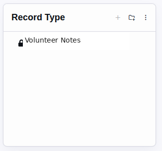

Structured records that can follow any Rock entity
Rock Records adds configurable record types, custom attributes, entity associations, Lava-driven detail views and PDFs, and workflow actions for creating and maintaining records. It is useful when information needs a durable home outside a single workflow while remaining connected to people, groups, or other Rock entities.
Version 1.1.3Obsidian UIRock 17.2.4Rock 18.2.4Rock 19.1.8
Core Model
Record Type
Defines the schema and presentation: category, active state, record attributes, manual-entry preference, entity mappings, and Lava templates.
Record
Stores the name, description, timestamps, workflow metadata, and values for the attributes defined by its record type.
Record Association
Connects a record to another Rock entity by entity type and entity ID.
Entity Type Mapping
Declares which Rock entity types may use a record type and powers context-aware record lists.
Installed Experience

Record types are organized with Rock categories. The label shown here is neutral demonstration data from a non-production Rock instance.
Surface
Default Route
Purpose
Records
/records
Browse record-type categories and manage record types.
Record Type Detail
/records/type/{RecordTypeId}
Configure a type and review its records.
Record Detail
/records/{RecordId}
View or edit one record and download its PDF when configured.
Person Records
/person/{PersonId}/records
Show records associated with a person when their types allow person-profile display.
Primary Blocks
Browse
Record Type List
Category-aware list with name, description, active state, custom grid columns, and security-aware actions.
Configure
Record Type Detail
Edits templates, attributes, category, display options, and allowed entity types.
Operate
Record List
Context-aware grid with configurable columns, attribute filters, date filters, and optional PDF actions.
Present
Record Detail
Renders standard fields or a Lava detail template and exposes PDF generation when a report template exists.
Rock Records checks Rock authorization when listing, viewing, editing, deleting, and selecting record types and records. Configure security deliberately for each record type and test with a non-administrator account before exposing a record surface.